Guesthouses, B&B
House'27-Zakopane
- Willa z historią
- bywały tu znane osobistości
- bliskość Krupówek i TPN
- spokój i cisza
- parking
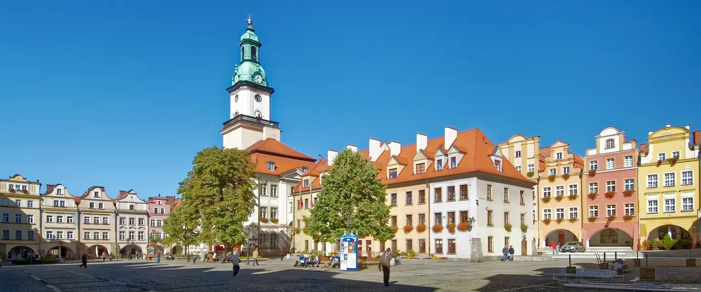
Sightseeing, cycling holidays and Polish food tours planned by Piotr, a local from Jelenia Góra. Places from the guidebooks and those which are not so widespread.
Plan your trip with meYou would like to make the most of your time in Poland, but you can't or don't want to browse thousands of websites and guidebooks. I plan the trip, help with tickets and accommodation and show you good places to eat at local prices, so nobody will rip you off.
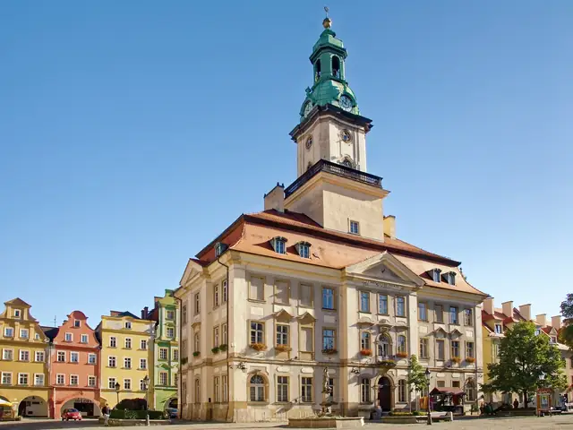
Travel to Poland Planner & AssistanceFlights to Wrocław, buses and trains to Jelenia Góra, tickets and opening hours, step by step.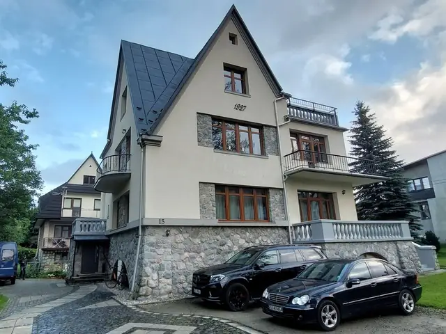
Accommodation & LocationComfortable and nice accommodation chosen for your personal needs.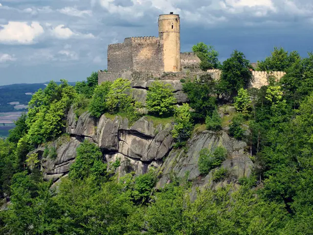
Sightseeing & AttractionsCastles, the valley of palaces and gardens, Karpacz and Szklarska Poręba.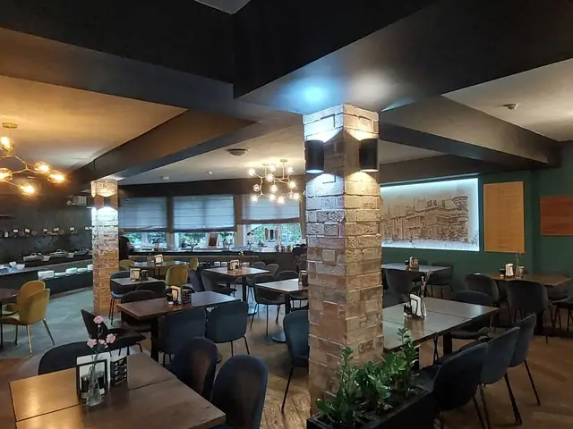
Polish Food TourPierogi, żurek, rosół and placki ziemniaczane in local eateries.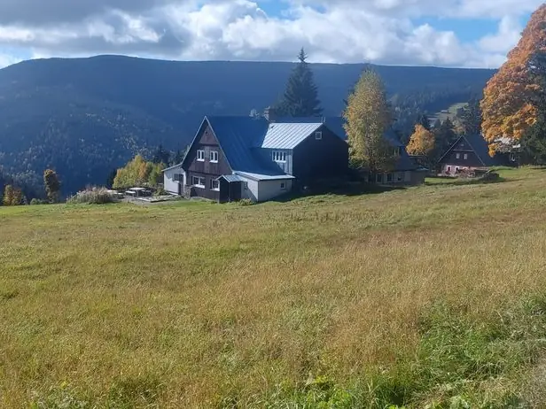
Cycling holidays in PolandAround 50 road routes and as many for MTB and Enduro around Jelenia Góra.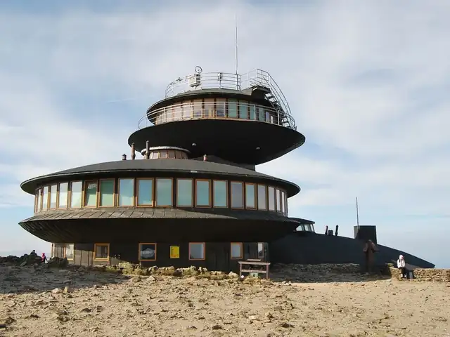
Other activitiesHiking, ski and snowboard weeks, Golden Polish Autumn.Active holidays with my daily guide services, based in Jelenia Góra at the foot of the Karkonosze mountains.
Prices exclude fares and entry tickets, transfers and accommodation further than 30 km from Jelenia Góra.
Ask about your datesI'm a passionate cyclist. Here are the long-distance expeditions I have ridden and route descriptions for road, gravel and MTB bikes with photos and GPX files.
Expeditions with panniers, in Poland and abroad
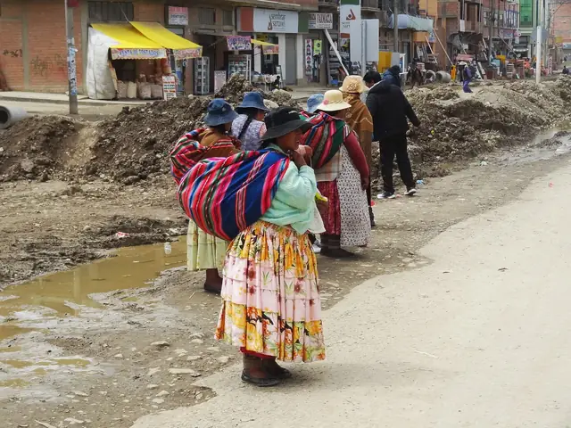
15 000 kmSouth America Cycling Trip2015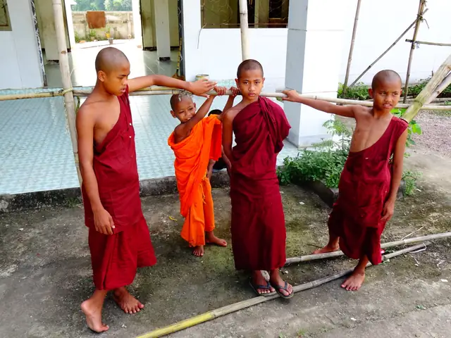
15 000 kmAzja, Nowa Zelandia, Australia2017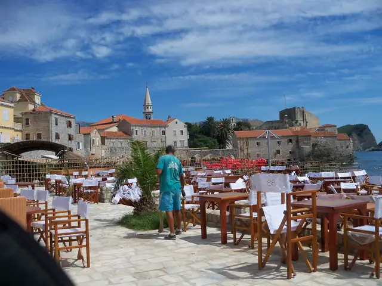
13 000 kmSzlakiem stolic Europy2010/2011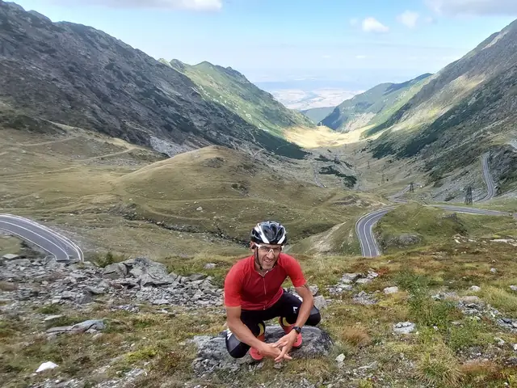
3931 kmBałkanywrzesień-październik 2026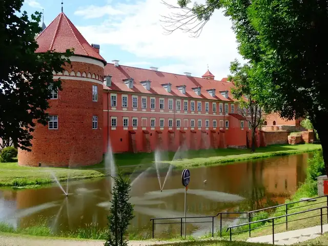
3900 kmDookoła Polski + Lwów + Druskienniki + Szlak Odra-Nysa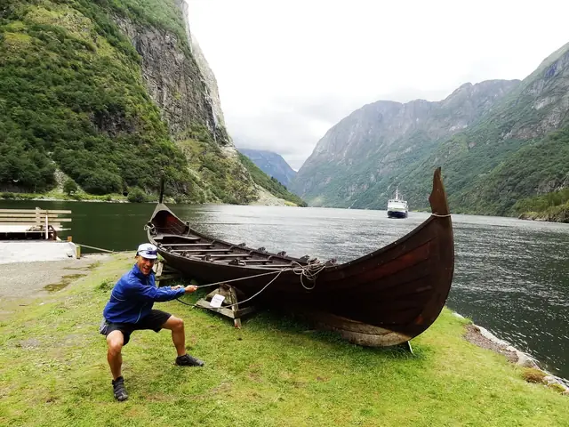
3150 kmSkandynawia2014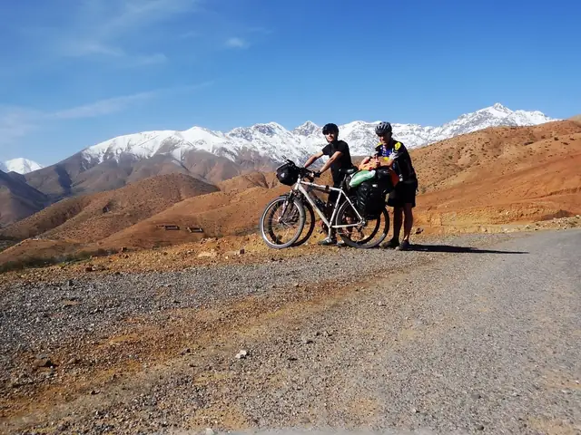
3000 kmMaroko2015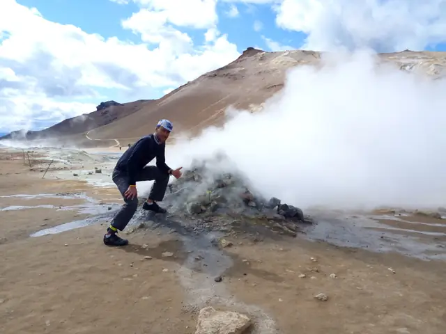
Ring RoadIslandia2016Road, gravel and MTB routes with photos and GPX files
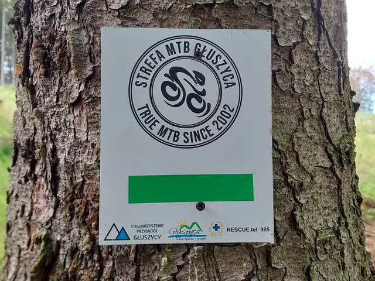
Strefa MTB SudetyMTB · 4 trasy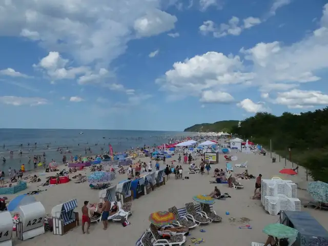
Z Jeleniej Góry do MiędzyzdrojówRoad · 492 km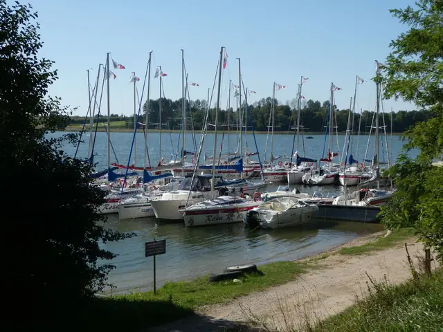
Mazurska Pętla RowerowaGravel · ok. 300 km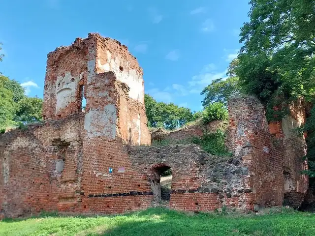
Dolina BaryczyGravel · 260 km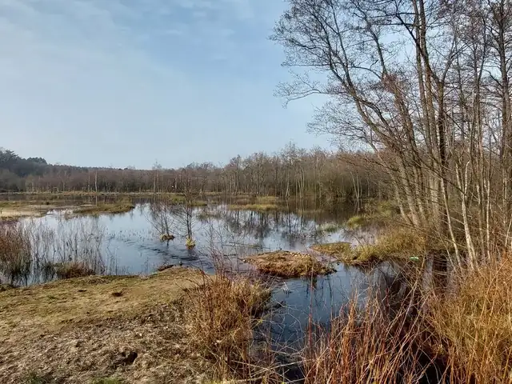
KaszubyGravel · ok. 230 kmNew routes appear first in the Facebook group: join the group.
Guesthouses, hotels, castles and unusual places all over Poland where I have stayed or been, each with my own short review.
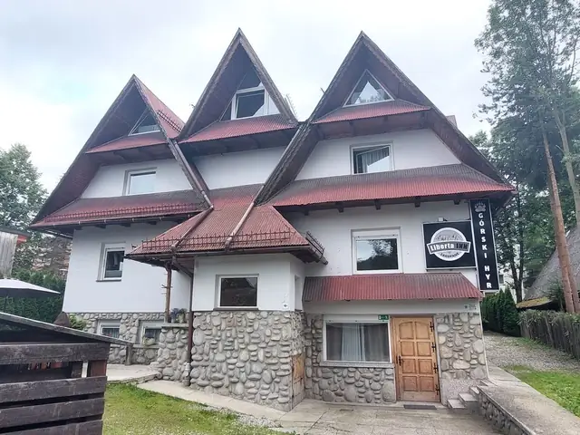
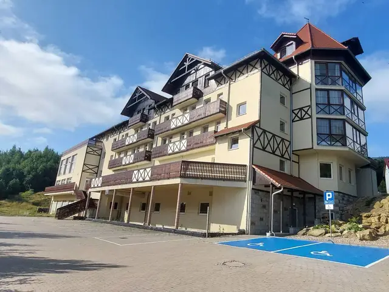
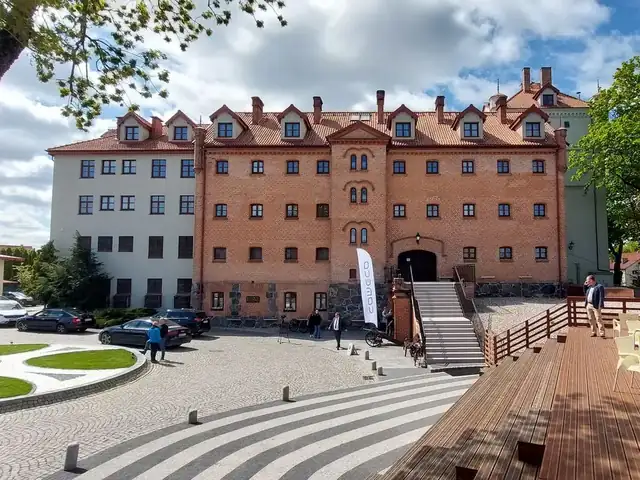
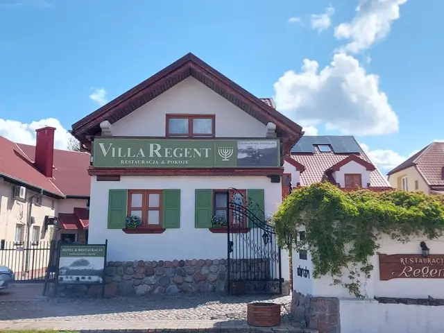
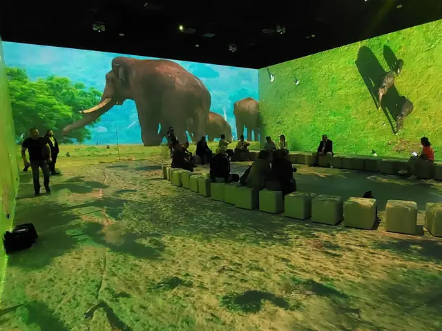
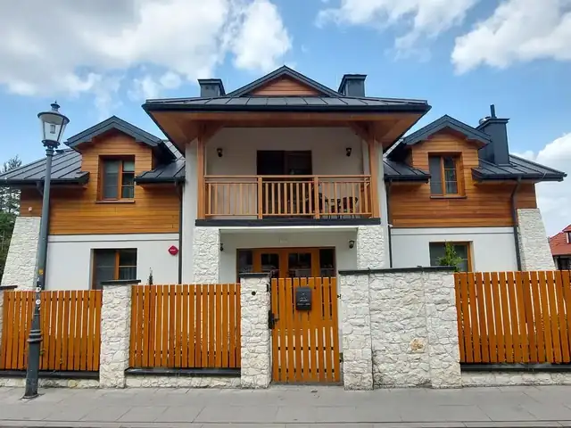
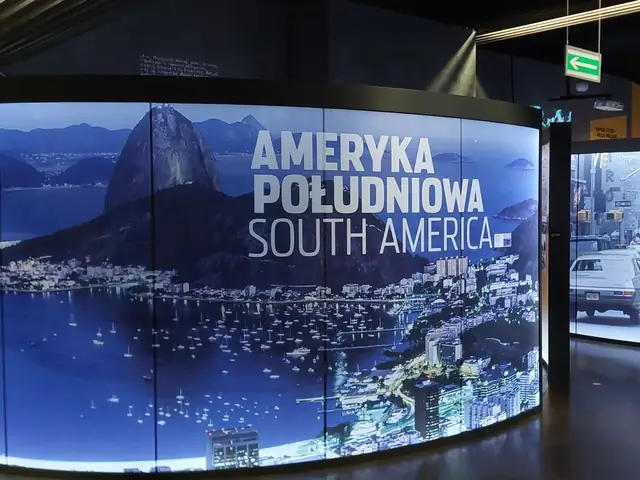
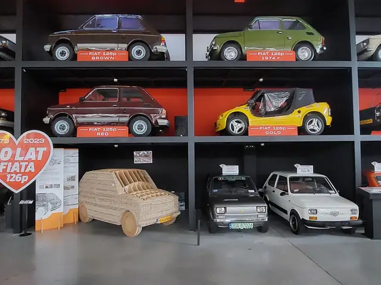
A city in Lower Silesia with beautiful mountain views, spectacular palaces and historic gardens. The Jelenia Góra valley is often nicknamed "The Pearl of Karkonosze". It lies in the Polish-German-Czech triangle.
Castles, palaces and towns from above: Poland by Drone
Hi, my name is Piotr.
I'm a regionalist and promoter of Lower Silesia and other regions. The site operates on a non-profit basis and has an educational and cultural dimension. Its main goal is to promote Poland and a healthy lifestyle, i.e. cycling.
I'm a local man and native Polish speaker, proud and passionate about my own country. Poland is a diversified country with lovely people, interesting culture and delicious food.
Send your dates and the number of people, or just drop me a message. I'll help you with the best flights and connections too.
hello@visitpoland.eu